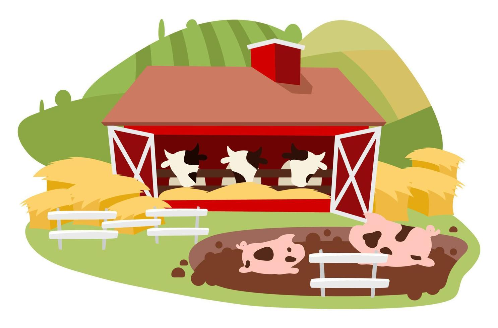

Interdependência
ㅤToda a conexão entre ambas as zonas aumenta o mercado de trabalho e o mecado economico. Cada uma dessas zonas produz e fornece recursos essenciais que se complementam, promovendo uma relação de mutualismo que beneficia ambos os lados. Vamos explorar o que é produzido em cada área e como os mercados facilitam essa integração.
Produção nas Áreas Rurais
Agricultura:
ㅤ

Pecuária:
ㅤ

Recursos Naturais:
ㅤ
Produtos Florestais Não Madeireiros:
ㅤ
Produção nas Áreas Urbanas

Indústria de Alimentos:
ㅤ
Tecnologia e Serviços:
ㅤ

Produtos Industriais:
ㅤ
Comércio e Logística:
ㅤ
Funcionamento dos Mercados
Os mercados desempenham um papel crucial na conexão entre a produção rural e urbana:
Mercados Locais e Feiras:
ㅤ
Distribuição e Logística:
Plataformas Digitais:
ㅤA produção nas áreas rurais e urbanas é interdependente, com cada uma contribuindo de maneira única para a economia global. Os mercados desempenham um papel essencial na facilitação dessa integração, garantindo que os recursos sejam distribuídos eficientemente e que tanto as áreas rurais quanto urbanas possam prosperar mutuamente. Ao fortalecer essa conexão e aprimorar o funcionamento dos mercados, podemos promover um desenvolvimento equilibrado e sustentável que beneficie todas as partes envolvidas.